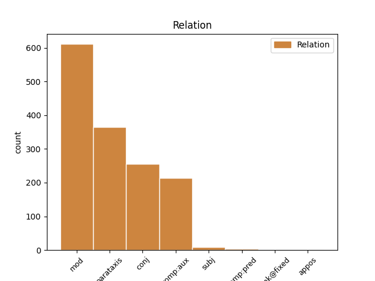
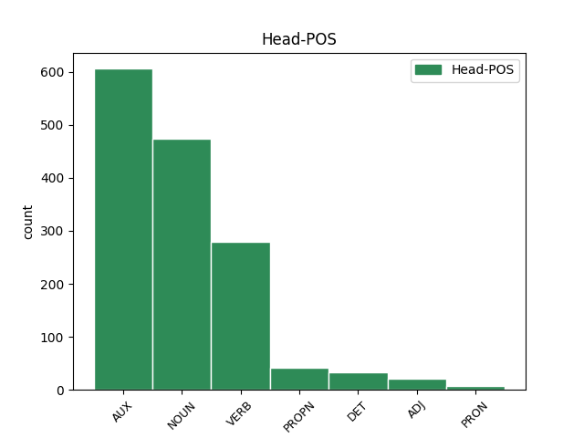
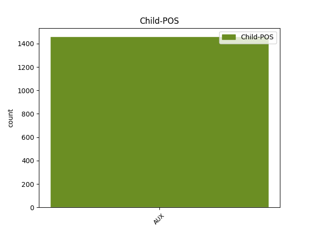

Distribution of features within this leaf



Agreement Rules sorted by frequency.
- When the dependent token is the modifer(mod) of the head token, and the dependent token is AUX.
1 Najprizemniji _ _ _ _ 0 _ _ _
2 primer _ _ _ _ 0 _ _ _
3 ove _ _ _ _ 0 _ _ _
4 opasnosti _ _ _ _ 0 _ _ _
5 je _ _ _ _ 0 _ _ _
6 skandal _ _ _ _ 0 _ _ _
7 iz _ _ _ _ 0 _ _ _
8 2014. _ _ _ _ 0 _ _ _
9 kada _ _ _ _ 0 _ _ _
10 su _ _ _ _ 0 _ _ _
11 ukradeni _ _ _ _ 0 _ _ _
12 i _ _ _ _ 0 _ _ _
13 objavljeni _ _ _ _ 0 _ _ _
14 privatni _ _ _ _ 0 _ _ _
15 obnaženi _ _ _ _ 0 _ _ _
16 selfiji selfi NOUN Ncmpn Case=Nom|Gender=Masc|Number=Plur 0 _ _ _
17 poznatih _ _ _ _ 0 _ _ _
18 osoba _ _ _ _ 0 _ _ _
19 iz _ _ _ _ 0 _ _ _
20 sveta _ _ _ _ 0 _ _ _
21 filma _ _ _ _ 0 _ _ _
22 i _ _ _ _ 0 _ _ _
23 pop _ _ _ _ 0 _ _ _
24 kulture _ _ _ _ 0 _ _ _
25 , _ _ _ _ 0 _ _ _
26 koji _ _ _ _ 0 _ _ _
27 su biti AUX Var3p Mood=Ind|Number=Plur|Person=3|Tense=Pres|VerbForm=Fin 16 mod _ _
28 bili _ _ _ _ 0 _ _ _
29 pohranjeni _ _ _ _ 0 _ _ _
30 na _ _ _ _ 0 _ _ _
31 oblaku _ _ _ _ 0 _ _ _
32 podataka _ _ _ _ 0 _ _ _
33 u _ _ _ _ 0 _ _ _
34 koji _ _ _ _ 0 _ _ _
35 su _ _ _ _ 0 _ _ _
36 hakeri _ _ _ _ 0 _ _ _
37 upali _ _ _ _ 0 _ _ _
1 Pored _ _ _ _ 0 _ _ _
2 brojnih _ _ _ _ 0 _ _ _
3 loših _ _ _ _ 0 _ _ _
4 posledica _ _ _ _ 0 _ _ _
5 , _ _ _ _ 0 _ _ _
6 nedostatak _ _ _ _ 0 _ _ _
7 sna _ _ _ _ 0 _ _ _
8 dovodi dovoditi VERB Vmr3s Mood=Ind|Number=Sing|Person=3|Tense=Pres|VerbForm=Fin 0 _ _ _
9 i _ _ _ _ 0 _ _ _
10 do _ _ _ _ 0 _ _ _
11 toga _ _ _ _ 0 _ _ _
12 da _ _ _ _ 0 _ _ _
13 mozak _ _ _ _ 0 _ _ _
14 počinje _ _ _ _ 0 _ _ _
15 da _ _ _ _ 0 _ _ _
16 „ _ _ _ _ 0 _ _ _
17 jede _ _ _ _ 0 _ _ _
18 sam _ _ _ _ 0 _ _ _
19 sebe _ _ _ _ 0 _ _ _
20 ” _ _ _ _ 0 _ _ _
21 , _ _ _ _ 0 _ _ _
22 zaključak _ _ _ _ 0 _ _ _
23 je biti AUX Var3s Mood=Ind|Number=Sing|Person=3|Tense=Pres|VerbForm=Fin 8 parataxis _ _
24 novog _ _ _ _ 0 _ _ _
25 istraživanja _ _ _ _ 0 _ _ _
1 Najprizemniji _ _ _ _ 0 _ _ _
2 primer _ _ _ _ 0 _ _ _
3 ove _ _ _ _ 0 _ _ _
4 opasnosti _ _ _ _ 0 _ _ _
5 je _ _ _ _ 0 _ _ _
6 skandal _ _ _ _ 0 _ _ _
7 iz _ _ _ _ 0 _ _ _
8 2014. _ _ _ _ 0 _ _ _
9 kada _ _ _ _ 0 _ _ _
10 su _ _ _ _ 0 _ _ _
11 ukradeni _ _ _ _ 0 _ _ _
12 i _ _ _ _ 0 _ _ _
13 objavljeni _ _ _ _ 0 _ _ _
14 privatni _ _ _ _ 0 _ _ _
15 obnaženi _ _ _ _ 0 _ _ _
16 selfiji _ _ _ _ 0 _ _ _
17 poznatih _ _ _ _ 0 _ _ _
18 osoba _ _ _ _ 0 _ _ _
19 iz _ _ _ _ 0 _ _ _
20 sveta _ _ _ _ 0 _ _ _
21 filma _ _ _ _ 0 _ _ _
22 i _ _ _ _ 0 _ _ _
23 pop _ _ _ _ 0 _ _ _
24 kulture _ _ _ _ 0 _ _ _
25 , _ _ _ _ 0 _ _ _
26 koji _ _ _ _ 0 _ _ _
27 su biti AUX Var3p Mood=Ind|Number=Plur|Person=3|Tense=Pres|VerbForm=Fin 0 _ _ _
28 bili biti AUX Vap-pm Gender=Masc|Number=Plur|Tense=Past|VerbForm=Part|Voice=Act 27 comp:aux _ _
29 pohranjeni _ _ _ _ 0 _ _ _
30 na _ _ _ _ 0 _ _ _
31 oblaku _ _ _ _ 0 _ _ _
32 podataka _ _ _ _ 0 _ _ _
33 u _ _ _ _ 0 _ _ _
34 koji _ _ _ _ 0 _ _ _
35 su _ _ _ _ 0 _ _ _
36 hakeri _ _ _ _ 0 _ _ _
37 upali _ _ _ _ 0 _ _ _
1 Naime _ _ _ _ 0 _ _ _
2 , _ _ _ _ 0 _ _ _
3 2016. _ _ _ _ 0 _ _ _
4 jedan _ _ _ _ 0 _ _ _
5 pametni _ _ _ _ 0 _ _ _
6 automobil _ _ _ _ 0 _ _ _
7 američkog _ _ _ _ 0 _ _ _
8 proizvođača _ _ _ _ 0 _ _ _
9 Tesla _ _ _ _ 0 _ _ _
10 Motors _ _ _ _ 0 _ _ _
11 nije biti AUX Var3s Mood=Ind|Number=Sing|Person=3|Polarity=Neg|Tense=Pres|VerbForm=Fin 0 _ _ _
12 uspeo _ _ _ _ 0 _ _ _
13 da _ _ _ _ 0 _ _ _
14 uoči _ _ _ _ 0 _ _ _
15 razliku _ _ _ _ 0 _ _ _
16 između _ _ _ _ 0 _ _ _
17 bele _ _ _ _ 0 _ _ _
18 površine _ _ _ _ 0 _ _ _
19 prikolice _ _ _ _ 0 _ _ _
20 i _ _ _ _ 0 _ _ _
21 neba _ _ _ _ 0 _ _ _
22 i _ _ _ _ 0 _ _ _
23 došlo _ _ _ _ 0 _ _ _
24 je biti AUX Var3s Mood=Ind|Number=Sing|Person=3|Tense=Pres|VerbForm=Fin 11 conj _ _
25 do _ _ _ _ 0 _ _ _
26 sudara _ _ _ _ 0 _ _ _
27 sa _ _ _ _ 0 _ _ _
28 smrtnim _ _ _ _ 0 _ _ _
29 ishodom _ _ _ _ 0 _ _ _
30 . _ _ _ _ 0 _ _ _
1 Naime _ _ _ _ 0 _ _ _
2 , _ _ _ _ 0 _ _ _
3 u _ _ _ _ 0 _ _ _
4 ovoj _ _ _ _ 0 _ _ _
5 vrsti _ _ _ _ 0 _ _ _
6 romana _ _ _ _ 0 _ _ _
7 ne _ _ _ _ 0 _ _ _
8 odgoneta odgonetati VERB Vmr3s Mood=Ind|Number=Sing|Person=3|Tense=Pres|VerbForm=Fin 0 _ _ _
9 se _ _ _ _ 0 _ _ _
10 samo _ _ _ _ 0 _ _ _
11 ko _ _ _ _ 0 _ _ _
12 je biti AUX Var3s Mood=Ind|Number=Sing|Person=3|Tense=Pres|VerbForm=Fin 8 subj _ _
13 ubica _ _ _ _ 0 _ _ _
14 , _ _ _ _ 0 _ _ _
15 već _ _ _ _ 0 _ _ _
16 i _ _ _ _ 0 _ _ _
17 u _ _ _ _ 0 _ _ _
18 kakvom _ _ _ _ 0 _ _ _
19 svetu _ _ _ _ 0 _ _ _
20 živimo _ _ _ _ 0 _ _ _
21 . _ _ _ _ 0 _ _ _
1 Ekonomisti _ _ _ _ 0 _ _ _
2 upozoravaju _ _ _ _ 0 _ _ _
3 da _ _ _ _ 0 _ _ _
4 bi _ _ _ _ 0 _ _ _
5 turska _ _ _ _ 0 _ _ _
6 ekonomija _ _ _ _ 0 _ _ _
7 mogla _ _ _ _ 0 _ _ _
8 da _ _ _ _ 0 _ _ _
9 nastavi _ _ _ _ 0 _ _ _
10 da _ _ _ _ 0 _ _ _
11 se _ _ _ _ 0 _ _ _
12 " _ _ _ _ 0 _ _ _
13 grči _ _ _ _ 0 _ _ _
14 " _ _ _ _ 0 _ _ _
15 i _ _ _ _ 0 _ _ _
16 procenjuju _ _ _ _ 0 _ _ _
17 da _ _ _ _ 0 _ _ _
18 bi _ _ _ _ 0 _ _ _
19 u _ _ _ _ 0 _ _ _
20 2009. _ _ _ _ 0 _ _ _
21 deflacija _ _ _ _ 0 _ _ _
22 mogla moći VERB Vmp-sf Gender=Fem|Number=Sing|Tense=Past|VerbForm=Part|Voice=Act 0 _ _ _
23 da _ _ _ _ 0 _ _ _
24 bude biti AUX Var3s Mood=Ind|Number=Sing|Person=3|Tense=Pres|VerbForm=Fin 22 comp:pred _ _
25 5,1 _ _ _ _ 0 _ _ _
26 odsto _ _ _ _ 0 _ _ _
27 . _ _ _ _ 0 _ _ _
1 Organizatori _ _ _ _ 0 _ _ _
2 su _ _ _ _ 0 _ _ _
3 planirali _ _ _ _ 0 _ _ _
4 tihu _ _ _ _ 0 _ _ _
5 komemoraciju _ _ _ _ 0 _ _ _
6 za _ _ _ _ 0 _ _ _
7 žrtve _ _ _ _ 0 _ _ _
8 srebreničkog _ _ _ _ 0 _ _ _
9 masakra _ _ _ _ 0 _ _ _
10 , _ _ _ _ 0 _ _ _
11 posle _ _ _ _ 0 _ _ _
12 čega _ _ _ _ 0 _ _ _
13 je _ _ _ _ 0 _ _ _
14 trebalo _ _ _ _ 0 _ _ _
15 da _ _ _ _ 0 _ _ _
16 usledi _ _ _ _ 0 _ _ _
17 emitovanje _ _ _ _ 0 _ _ _
18 pesme pesma NOUN Ncfsg Case=Gen|Gender=Fem|Number=Sing 0 _ _ _
19 Eni _ _ _ _ 0 _ _ _
20 Lenoks _ _ _ _ 0 _ _ _
21 " _ _ _ _ 0 _ _ _
22 Danas _ _ _ _ 0 _ _ _
23 sam biti AUX Var1s Mood=Ind|Number=Sing|Person=1|Tense=Pres|VerbForm=Fin 18 appos _ _
24 spasila _ _ _ _ 0 _ _ _
25 svet _ _ _ _ 0 _ _ _
26 " _ _ _ _ 0 _ _ _
27 ( _ _ _ _ 0 _ _ _
28 I _ _ _ _ 0 _ _ _
29 Saved _ _ _ _ 0 _ _ _
30 the _ _ _ _ 0 _ _ _
31 World _ _ _ _ 0 _ _ _
32 Today _ _ _ _ 0 _ _ _
33 ) _ _ _ _ 0 _ _ _
34 i _ _ _ _ 0 _ _ _
35 deklaracija _ _ _ _ 0 _ _ _
36 . _ _ _ _ 0 _ _ _
1 Interesantno _ _ _ _ 0 _ _ _
2 je _ _ _ _ 0 _ _ _
3 da _ _ _ _ 0 _ _ _
4 se _ _ _ _ 0 _ _ _
5 prema _ _ _ _ 0 _ _ _
6 njima _ _ _ _ 0 _ _ _
7 režim _ _ _ _ 0 _ _ _
8 postavio _ _ _ _ 0 _ _ _
9 „ _ _ _ _ 0 _ _ _
10 terapeutski _ _ _ _ 0 _ _ _
11 ” _ _ _ _ 0 _ _ _
12 u _ _ _ _ 0 _ _ _
13 smislu _ _ _ _ 0 _ _ _
14 da _ _ _ _ 0 _ _ _
15 onaj _ _ _ _ 0 _ _ _
16 koji _ _ _ _ 0 _ _ _
17 gubi _ _ _ _ 0 _ _ _
18 ima _ _ _ _ 0 _ _ _
19 pravo _ _ _ _ 0 _ _ _
20 i _ _ _ _ 0 _ _ _
21 da _ _ _ _ 0 _ _ _
22 se _ _ _ _ 0 _ _ _
23 ljuti _ _ _ _ 0 _ _ _
24 , _ _ _ _ 0 _ _ _
25 i _ _ _ _ 0 _ _ _
26 da _ _ _ _ 0 _ _ _
27 ga _ _ _ _ 0 _ _ _
28 treba _ _ _ _ 0 _ _ _
29 pustiti _ _ _ _ 0 _ _ _
30 da _ _ _ _ 0 _ _ _
31 se _ _ _ _ 0 _ _ _
32 „ _ _ _ _ 0 _ _ _
33 izventilira _ _ _ _ 0 _ _ _
34 ” _ _ _ _ 0 _ _ _
35 , _ _ _ _ 0 _ _ _
36 to taj DET Pd-nsn Case=Nom|Gender=Neut|Number=Sing|PronType=Dem 0 _ _ _
37 jest biti AUX Var3s Mood=Ind|Number=Sing|Person=3|Tense=Pres|VerbForm=Fin 36 unk@fixed _ _
38 da _ _ _ _ 0 _ _ _
39 izbaci _ _ _ _ 0 _ _ _
40 to _ _ _ _ 0 _ _ _
41 osećanje _ _ _ _ 0 _ _ _
42 iz _ _ _ _ 0 _ _ _
43 sebe _ _ _ _ 0 _ _ _
44 . _ _ _ _ 0 _ _ _
Disagree Examples:
1 Ramkovski _ _ _ _ 0 _ _ _
2 je _ _ _ _ 0 _ _ _
3 delovao _ _ _ _ 0 _ _ _
4 preko _ _ _ _ 0 _ _ _
5 svojih _ _ _ _ 0 _ _ _
6 15 _ _ _ _ 0 _ _ _
7 firmi firma NOUN Ncfpg Case=Gen|Gender=Fem|Number=Plur 0 _ _ _
8 -- _ _ _ _ 0 _ _ _
9 koje _ _ _ _ 0 _ _ _
10 takođe _ _ _ _ 0 _ _ _
11 posluju _ _ _ _ 0 _ _ _
12 u _ _ _ _ 0 _ _ _
13 Turskoj _ _ _ _ 0 _ _ _
14 i _ _ _ _ 0 _ _ _
15 SAD _ _ _ _ 0 _ _ _
16 -- _ _ _ _ 0 _ _ _
17 čije _ _ _ _ 0 _ _ _
18 je biti AUX Var3s Mood=Ind|Number=Sing|Person=3|Tense=Pres|VerbForm=Fin 7 mod _ _
19 sedište _ _ _ _ 0 _ _ _
20 naveo _ _ _ _ 0 _ _ _
21 na _ _ _ _ 0 _ _ _
22 adresi _ _ _ _ 0 _ _ _
23 A1 _ _ _ _ 0 _ _ _
24 TV _ _ _ _ 0 _ _ _
25 . _ _ _ _ 0 _ _ _
1 U _ _ _ _ 0 _ _ _
2 suprotnom _ _ _ _ 0 _ _ _
3 ćemo hteti AUX Var1p Mood=Ind|Number=Plur|Person=1|Tense=Pres|VerbForm=Fin 0 _ _ _
4 biti _ _ _ _ 0 _ _ _
5 neozbiljni _ _ _ _ 0 _ _ _
6 političari _ _ _ _ 0 _ _ _
7 bez _ _ _ _ 0 _ _ _
8 zajedničkog _ _ _ _ 0 _ _ _
9 stava _ _ _ _ 0 _ _ _
10 " _ _ _ _ 0 _ _ _
11 , _ _ _ _ 0 _ _ _
12 rekao _ _ _ _ 0 _ _ _
13 je biti AUX Var3s Mood=Ind|Number=Sing|Person=3|Tense=Pres|VerbForm=Fin 3 parataxis _ _
14 Lagumdžija _ _ _ _ 0 _ _ _
15 novinarima _ _ _ _ 0 _ _ _
16 u _ _ _ _ 0 _ _ _
17 Beogradu _ _ _ _ 0 _ _ _
18 posle _ _ _ _ 0 _ _ _
19 sastanka _ _ _ _ 0 _ _ _
20 sa _ _ _ _ 0 _ _ _
21 Jeremićem _ _ _ _ 0 _ _ _
22 14. _ _ _ _ 0 _ _ _
23 marta _ _ _ _ 0 _ _ _
24 . _ _ _ _ 0 _ _ _
1 " _ _ _ _ 0 _ _ _
2 Lagumdžija _ _ _ _ 0 _ _ _
3 i _ _ _ _ 0 _ _ _
4 Komšić _ _ _ _ 0 _ _ _
5 su biti AUX Var3p Mood=Ind|Number=Plur|Person=3|Tense=Pres|VerbForm=Fin 0 _ _ _
6 upropastili _ _ _ _ 0 _ _ _
7 SDP _ _ _ _ 0 _ _ _
8 pretvorivši _ _ _ _ 0 _ _ _
9 je biti AUX Var3s Mood=Ind|Number=Sing|Person=3|Tense=Pres|VerbForm=Fin 5 mod _ _
10 u _ _ _ _ 0 _ _ _
11 taoca _ _ _ _ 0 _ _ _
12 ličnih _ _ _ _ 0 _ _ _
13 političkih _ _ _ _ 0 _ _ _
14 želja _ _ _ _ 0 _ _ _
15 . _ _ _ _ 0 _ _ _
1 To _ _ _ _ 0 _ _ _
2 je biti AUX Var3s Mood=Ind|Number=Sing|Person=3|Tense=Pres|VerbForm=Fin 0 _ _ _
3 njeno _ _ _ _ 0 _ _ _
4 temeljno _ _ _ _ 0 _ _ _
5 načelo _ _ _ _ 0 _ _ _
6 i _ _ _ _ 0 _ _ _
7 ova _ _ _ _ 0 _ _ _
8 dešavanja _ _ _ _ 0 _ _ _
9 u _ _ _ _ 0 _ _ _
10 stranci _ _ _ _ 0 _ _ _
11 su biti AUX Var3p Mood=Ind|Number=Plur|Person=3|Tense=Pres|VerbForm=Fin 2 conj _ _
12 cena _ _ _ _ 0 _ _ _
13 tog _ _ _ _ 0 _ _ _
14 čina _ _ _ _ 0 _ _ _
15 " _ _ _ _ 0 _ _ _
16 , _ _ _ _ 0 _ _ _
17 kaže _ _ _ _ 0 _ _ _
18 za _ _ _ _ 0 _ _ _
19 SETimes _ _ _ _ 0 _ _ _
20 Senad _ _ _ _ 0 _ _ _
21 Pećanac _ _ _ _ 0 _ _ _
22 , _ _ _ _ 0 _ _ _
23 bivši _ _ _ _ 0 _ _ _
24 član _ _ _ _ 0 _ _ _
25 SDP _ _ _ _ 0 _ _ _
26 . _ _ _ _ 0 _ _ _
1 Danas _ _ _ _ 0 _ _ _
2 se _ _ _ _ 0 _ _ _
3 suočavamo suočavati VERB Vmr1p Mood=Ind|Number=Plur|Person=1|Tense=Pres|VerbForm=Fin 0 _ _ _
4 sa _ _ _ _ 0 _ _ _
5 novim _ _ _ _ 0 _ _ _
6 ozbiljnim _ _ _ _ 0 _ _ _
7 problemima _ _ _ _ 0 _ _ _
8 koji _ _ _ _ 0 _ _ _
9 utiču _ _ _ _ 0 _ _ _
10 ne _ _ _ _ 0 _ _ _
11 samo _ _ _ _ 0 _ _ _
12 na _ _ _ _ 0 _ _ _
13 državne _ _ _ _ 0 _ _ _
14 institucije _ _ _ _ 0 _ _ _
15 , _ _ _ _ 0 _ _ _
16 nego _ _ _ _ 0 _ _ _
17 i _ _ _ _ 0 _ _ _
18 na _ _ _ _ 0 _ _ _
19 osnovna _ _ _ _ 0 _ _ _
20 ljudska _ _ _ _ 0 _ _ _
21 prava _ _ _ _ 0 _ _ _
22 " _ _ _ _ 0 _ _ _
23 , _ _ _ _ 0 _ _ _
24 rekao _ _ _ _ 0 _ _ _
25 je biti AUX Var3s Mood=Ind|Number=Sing|Person=3|Tense=Pres|VerbForm=Fin 3 parataxis _ _
26 Timofti _ _ _ _ 0 _ _ _
27 poslanicima _ _ _ _ 0 _ _ _
28 . _ _ _ _ 0 _ _ _